速览
看过之前的「企划概念」各集就会知道，他的企划大多是逻辑型：有课题，再想方案解决。但 DX 的概念非常简单：让大乱斗飞跃式强化。对比 DX 与初代就能看出，斗士、舞台、画面、特效、动作、声音、体量、手感、道具、附加内容全部升级——对只知道 N64 的人来说一定很震撼。N64 的机能和开发环境都很严苛：初代每名斗士约 300 多边形，3 人以上对战时约 200，在家用格斗类里大概是最低水准，所以萨姆斯的腿是三角形；贴图只有 64×64 或 32×32。DX 用 NGC，性能大增，也比 64 好做得多。这也是他首次光盘开发：终于可以流媒体播放实录音乐，并用了多首管弦乐编曲——这成为后来持续十年的 PRESS START 演奏会、以及之后大乱斗与众多作曲家合作的契机。CG 影片也是首次导入，因为完全没假期，他过年都在画分镜。附加要素之一是手办（Figure）：游戏里能用的角色有限，但能收集、解说各种承载任天堂历史的角色，是很大的乐趣；制作也得到 Creatures 等团队外的协助。「值得花这么大力气吗？」的自问和他人质疑一直都有，但他认为不只是游戏，多数作品都必须「有别处没有的东西」，所以要全力发挥这个最大特点。DX 发表/发售时全世界期待高涨，他认为做出了足以回应期待的成品；DX 是 NGC 上销量第一的软件。
1. 极简的概念 0:00
他的企划大多是逻辑型：有课题，再想办法解决。
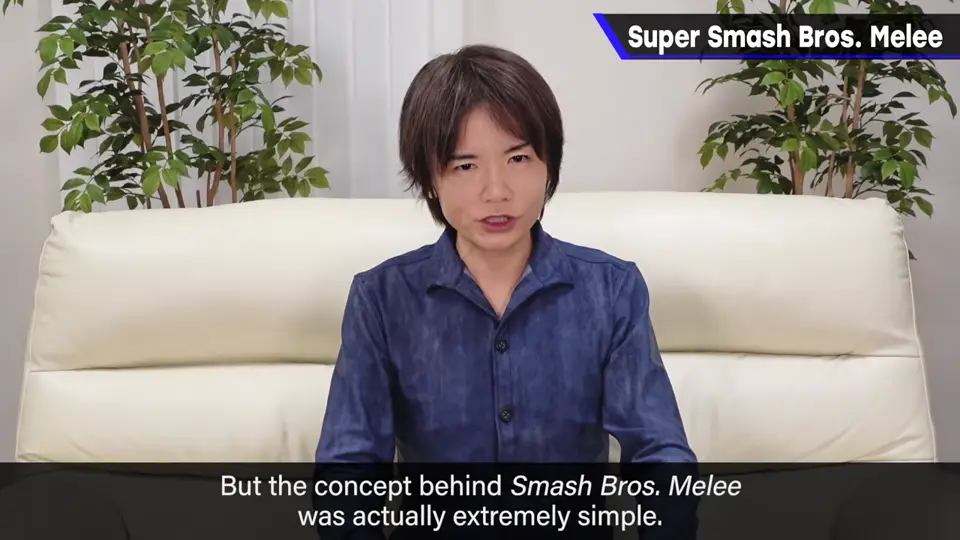
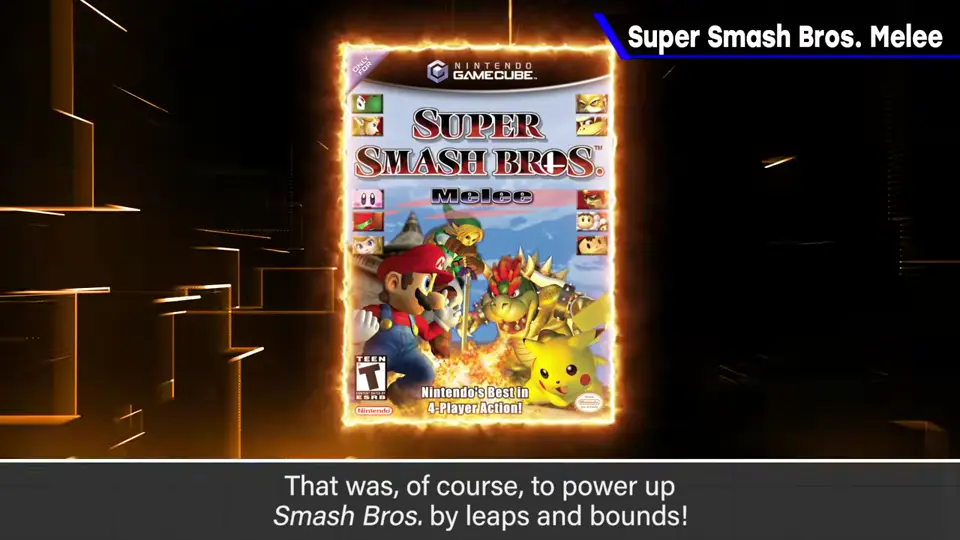
斗士、舞台、画面、特效、动作、声音、体量、手感、道具、附加……全部升级，对只知道 N64 的人一定很震撼。
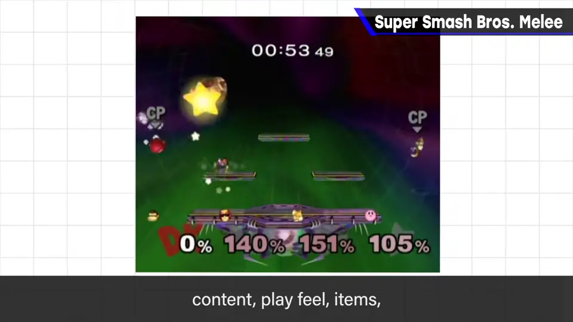
2. N64 的严苛限制 1:00
初代每名斗士约 300 多边形，3 人以上对战时约 200——家用格斗类里大概是最低水准。
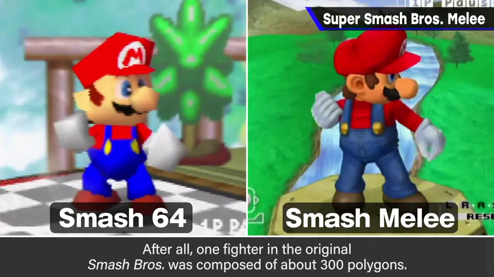
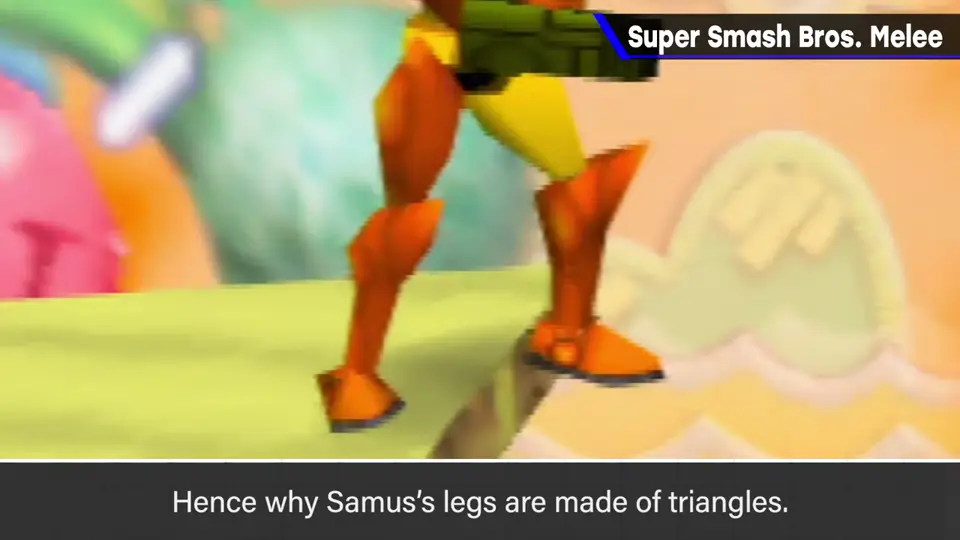
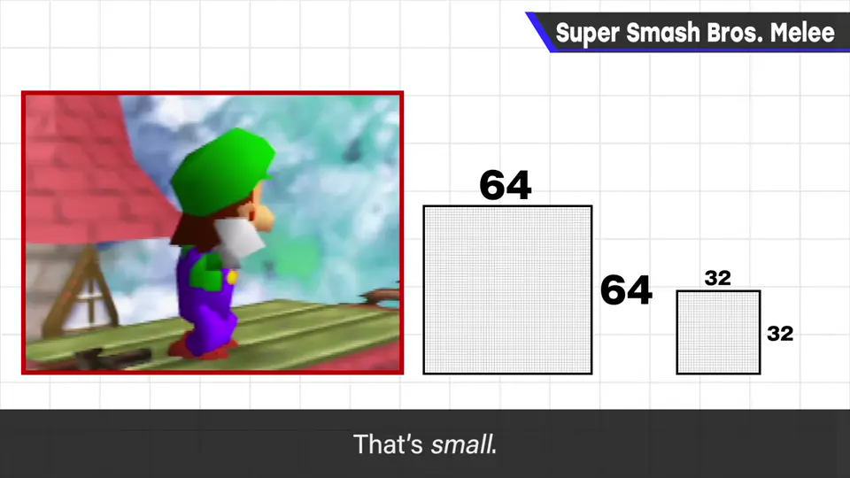
贴在斗士上的贴图也只有 64×64 或 32×32 点，非常小。
3. NGC 与光盘 1:43
DX 使用 NGC，性能大增，也比 64 好开发得多。这也是他首次光盘开发。
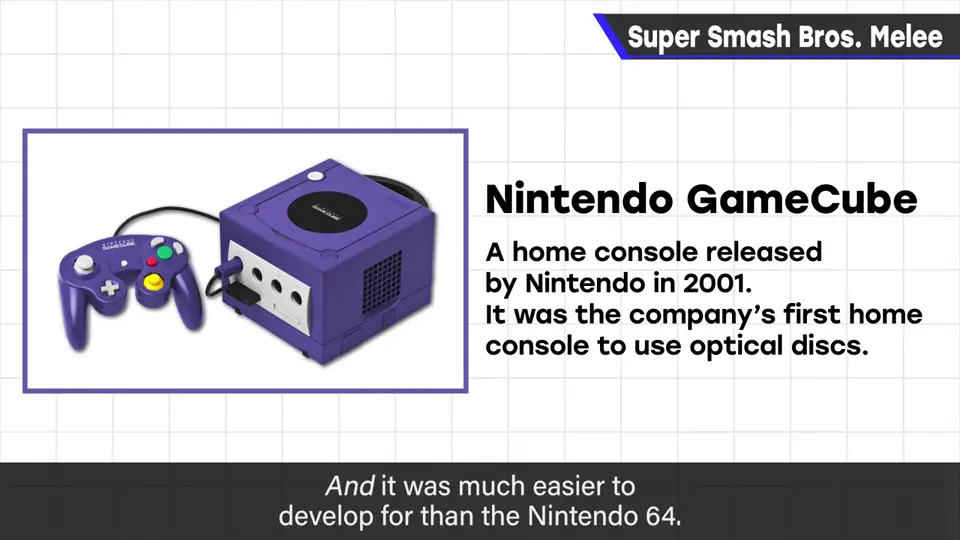
终于能用流媒体播放实录音乐，并采用了多首管弦乐编曲。
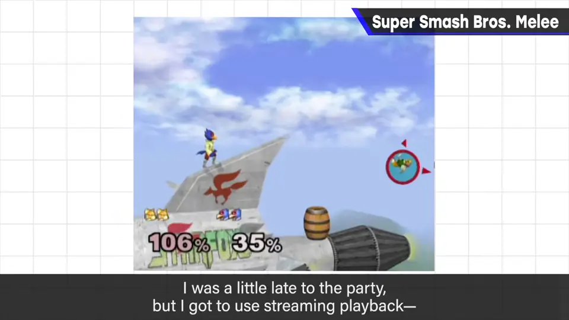
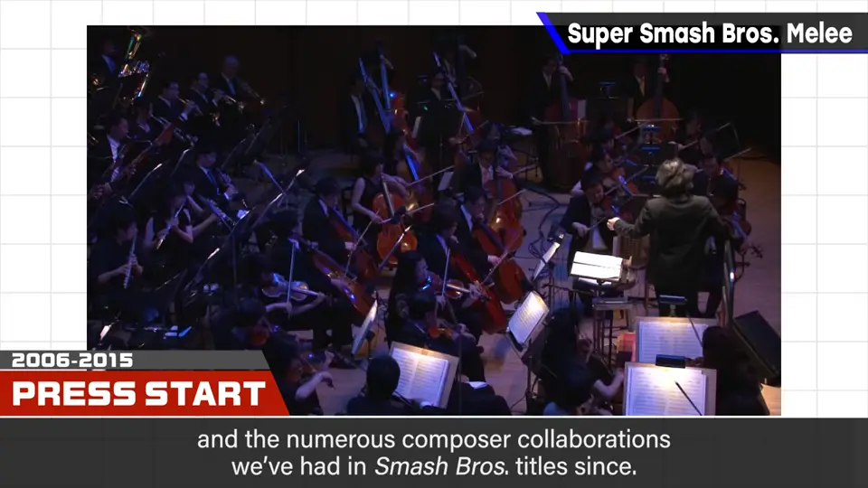
CG 影片也是首次导入；因为完全没假期，他过年都在画分镜。
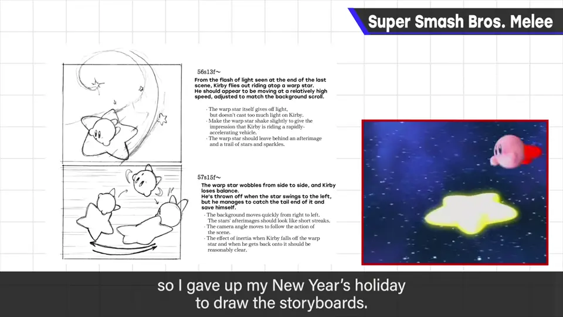
4. 手办：回馈任天堂历史 2:35
游戏里能用的角色有限，但收集各种承载任天堂历史的角色、并附上解说，会是很大的乐趣。
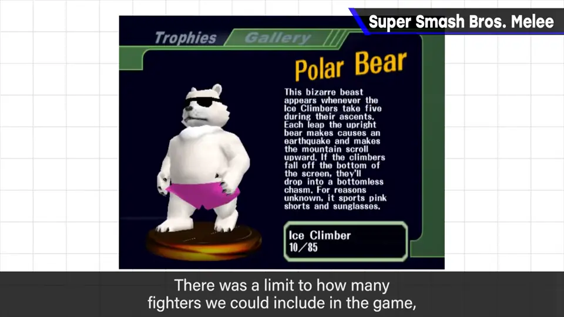
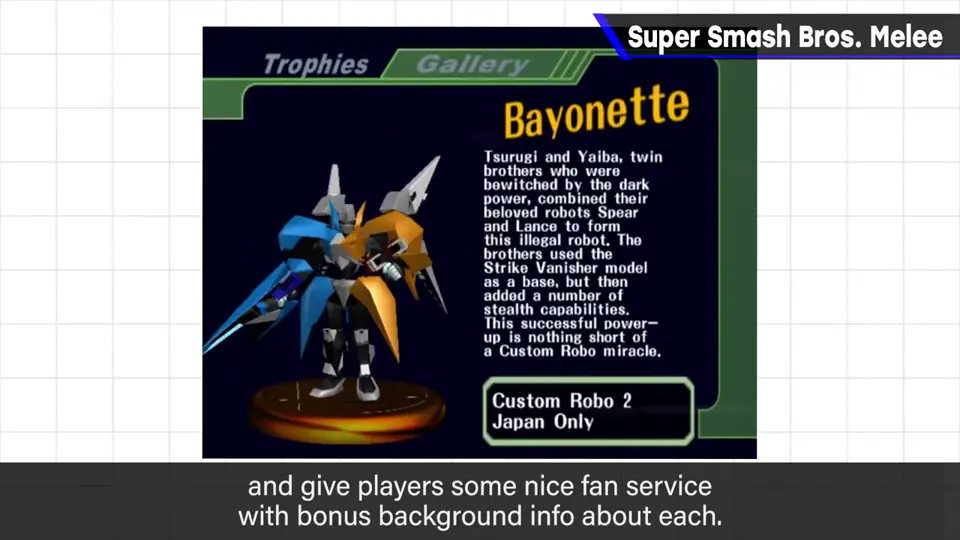
制作也得到 Creatures 等团队外的协助。
5. 「别处没有」 3:14
「值得花这么大力气吗？」的自问和他人质疑一直都有。
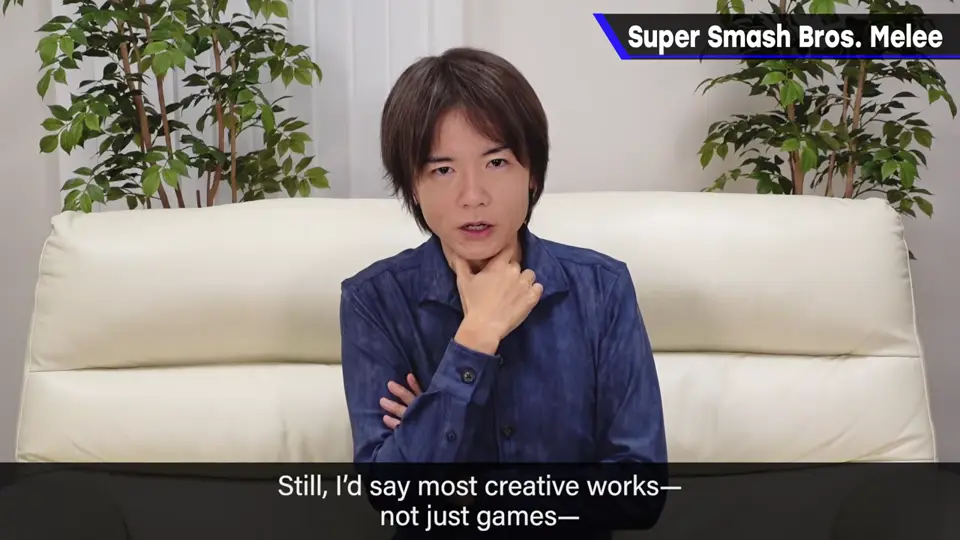
6. 结果 3:29
DX 发表/发售时全世界期待高涨，他认为成品足以回应期待。DX 是 NGC 上销量第一的软件。
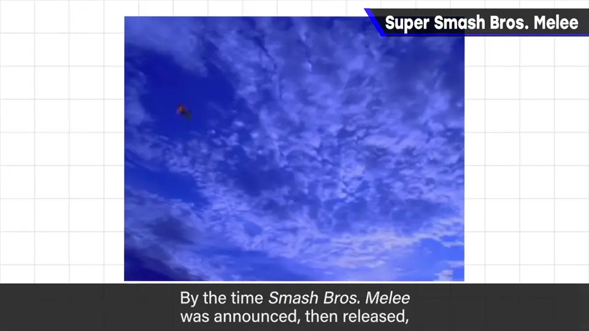
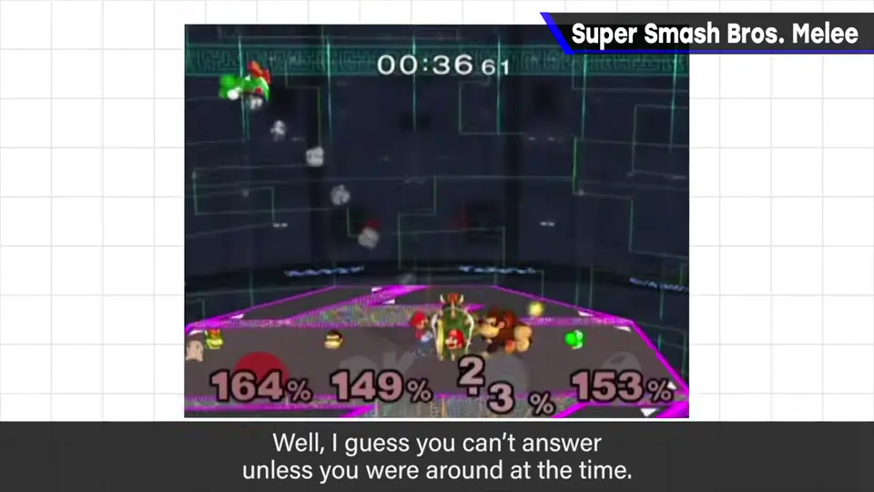
自测题
1. DX 的企划概念与樱井其他作品有什么不同？
其他多是「课题→解决」的逻辑型，DX 则很简单：让大乱斗飞跃式强化。 0:22
2. 光盘开发给 DX 的音乐带来了什么？
可以流媒体播放实录音乐，采用了管弦乐编曲，进而引出 PRESS START 演奏会等合作。 2:01
3. 为什么要花大力气做手办？
游戏内角色有限，而收集与解说任天堂历史角色是别处没有的乐趣；作品需要「别处没有」的特点。 2:56